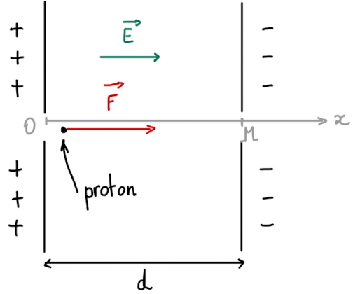

Mouvement d'une particule dans un champ
A savoir et Savoir Faire
- Montrer que le mouvement dans un champ uniforme est plan.
- Établir et exploiter les équations horaires du mouvement. Établir l’équation de la trajectoire.
- Discuter de l’influence des grandeurs physiques sur les caractéristiques du champ électrique créé par un condensateur plan, son expression étant donnée: \(E=\frac{U}{d}\)
- Décrire le principe d’un accélérateur linéaire de particules chargées (voir exo du cours).
Aspect énergétique:
- Exploiter la conservation de l’énergie mécanique ou le théorème de l’énergie cinétique dans le cas du mouvement dans un champ uniforme.
Techniques clés
- Rechercher des primitives ainsi que les constantes à l'aide des conditions initiales
- Exploiter les équations horaires pour trouver des points particuliers du mouvement (portée d'un tir, altitude max, ...)
- Ecrire la conservation de l'énergie mécanique pour un système ne subissant pas de frottements.
Vidéo de cours
- Petite récap concernant le champ de pesanteur: Vidéo
Exercices type BAC:
2013 Antilles
Deuxième loi de Newton, mouvement dans un champ électrique uniforme. Incertitude.
2021 Métropole Mars Exercice 1
Mouvement dans un champ de pesanteur, Énergies et Python (quasi pas)
2021 Métropole septembre
Mouvement dans un champ de pesanteur, Énergies
- Sujet
- Correction sur demande
QUIZZ
Q1
Le champ électrique \(\vec{E}\) produit entre deux armatures planes
- Est orienté de plaque + vers la plaque -
- Est orienté de plaque - vers la plaque +
- Est parallèle aux plaques
- Est perpendiculaire aux plaques
- A la même valeur partout entre les plaques
Q2
On considère un électron de charge q placé dans un champ électrique \(\vec{E}\)
- La force électrique subit par l'électron est dans le sens opposé que \(\vec{E}\).
- La force électrique subit par l'électron est dans le même sens que \(\vec{E}\).
- Cette force vaut \(\vec{F}=q.\vec{E}\)
- Cette force vaut \(\vec{F}=-q.\vec{E}\)
- Pour l'électron \(q=-e\)
- Pour l'électron \(q=e\)
Q3
L'énergie potentielle de pesanteur d'un système de masse \(m\) de vitesse \(v\) et d'altitude \(z\) vaut
- \(Ep=\frac{1}{2}mv^2\)
- \(Ep=mg\)
- \(Ep=mgz\)
- \(Ep=\frac{1}{2}mv^2+ mgz\)
Q4

La tension électrique entre les plaque vaut \(U\). Le travail de la force électrique lorsque le proton (de charge q) se déplace de O à M s'écrit:
- \(W = \vec{E} \cdot\vec {OM}\)
- \(W = \vec{F} \cdot\vec {OM}\)
- \(W = q\vec{E} \cdot\vec {OM}\)
- \(W=q.U\)
- \(W=-q.U\)
Q5
Un projectile lancée de manière oblique vers le haut avec une vitesse initiale \(v_0\) suit une trajectoire qui s'écrit: $$ y = \frac{-g.x^2}{2.v_0^2\cos^2\alpha}+x.\tan\alpha$$
Pour trouver \(x_p\) la portée du tir, on doit:
- Dériver \(y\) par rapport à \(x\)
- Chercher une primitive de \(y\)
- Remplacer \(x\) par 0
- Résoudre \(\frac{-g.x^2}{2.v_0^2\cos^2\alpha}+x.\tan\alpha=0\)
Correction
- Q1: 1,4,5
- Q2: 1,3,5
- Q3: 3
- Q4: 2,4
- Q5: 4